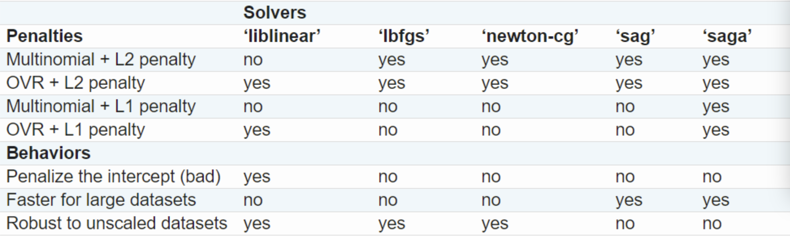

Python学习 Day 2
Data modeling with scikit-learn
Linear regression
1 | import sklearn.linear_model as lm |
基础的线性回归要求完美的环境：自变量互相uncorrelated。当它们相关时，噪声对模型的干扰会很大。当系数很大时，过拟合的嫌疑最重（被噪声干扰），因此加入惩罚机制\(\alpha \lVert w \rVert_2^2\)，现在目标函数改变
\[ \min \alpha \lVert w \rVert_2^2 + \sum_{i=1}^n(x_i\cdot w-y_i)^2 \]

1 | # Single alpha |
在Ridge中\(\alpha\)属性名叫\(\texttt{alpha}\)，但在RidgeCV中叫\(\texttt{alpha\_}\)，在后面的BayesianRidge也是有下划线的
类似的还有lasso回归，用的是L1-norm，大概是曼哈顿距离的概念，目标函数变成
\[ \min \alpha \lVert w \rVert_1 + \sum_{i=1}^n(x_i\cdot w-y_i)^2 \]
1 | reg = lm.Lasso(alpha=0.1) |
目前我们学会用交叉验证（CV）来最优化超参数，现在介绍另一种方法，叫贝叶斯方法（Bayesian techniques）
1 | reg = lm.BayesianRidge() |
我不知道贝叶斯统计里的\(\alpha\)和\(\lambda\)是啥意思，学这个得花点力气
下一个是Logistic regression
1 | reg = lm.LogisticRegression( |

待会研究下这五个是什么玩意
发现好玩的，print怎样控制小数点位数？
1 | print(f'Duration D = {duration:.3f}') |
形式为：在大括号内，变量名后面加:.3f，带f表示保留3位小数，不带f表示保留三位数字